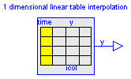
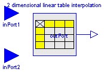

This package contains components to interpolate linearly in tables. Table data may optionally be read in from files (ASCII or Matlab-4 binary format). This package contains the following components:
CombiTableTime Table look-up with time as abszissa CombiTable1D Table look-up in one dimension CombiTable2D Table look-up in two dimensions
This package is not part of the Modelica standard library, because it is planned to realize a package with better and more general table support based on a different design.
Release Notes:
Copyright (C) 2000, DLR.
The ModelicaAdditions.Tables package is free software; it can be redistributed and/or modified under the terms of the Modelica license, see the license conditions and the accompanying disclaimer in the documentation of package Modelica in file "Modelica/package.mo".

Linear interpolation in a table with respect to time. Via parameter icol it can be defined how many columns of the table are interpolated. If, e.g., icol={2,4}, it is assumed that 2 output signals are present and that the first output is computed by interpolation of column 2 and the second output is computed by interpolation of column 4 of the table matrix.
The time points and function values are stored in a matrix "table[i,j]", where the first column "table[:,1]" contains the time points and the other columns contain the data to be interpolated. Example:
table = [0, 0;
1, 0;
1, 1;
2, 4;
3, 9;
4, 16]
If, e.g., time = 1.0, the output y = 0.0 (before event), 1.0 (after event)
e.g., time = 1.5, the output y = 2.5,
e.g., time = 2.0, the output y = 4.0,
e.g., time = 5.0, the output y = 23.0 (i.e. extrapolation).
The table matrix can be defined in the following ways:
tableName is "NoName" or has only blanks, fileName is "NoName" or has only blanks.
save tables.mat tab1 tab2 tab3 -V4when the three tables tab1, tab2, tab3 should be used from the model.
Table definition methods (1) and (3) do not allocate dynamic memory, and do not access files, whereas method (2) does. Therefore (1) and (3) are suited for hardware-in-the-loop simulation (e.g. with dSpace hardware). When the constant "NO_FILE" is defined, all parts of the source code of method (2) are removed by the C-preprocessor, such that no dynamic memory allocation and no access to files takes place.
If tables are read from an ASCII-file, the file need to have the following structure ("-----" is not part of the file content):
----------------------------------------------------- #1 double tab1(6,2) # comment line 0 0 1 0 1 1 2 4 3 9 4 16 double tab2(6,2) # another comment line 0 0 2 0 2 2 4 8 6 18 8 32 -----------------------------------------------------
Note, that the first two characters in the file need to be "#1". Afterwards, the corresponding matrix has to be declared with type, name and actual dimensions. Finally, in successive rows of the file, the elements of the matrix have to be given. Several matrices may be defined one after another.
| Name | Default | Description |
|---|---|---|
| table[:, :] | [0, 0; 1, 1] | table matrix (time = first column) |
| tableName | "NoName" | table name on file or in function usertab(optional) |
| fileName | "NoName" | file where matrix is stored (optional) |
| icol[:] | {2} | columns of table to be interpolated |
model CombiTableTime
"Table look-up with time as abszissa (matrix/file) "
parameter Real table[:, :]=[0, 0; 1, 1]
"table matrix (time = first column)";
parameter String tableName="NoName"
"table name on file or in function usertab(optional)";
parameter String fileName="NoName"
"file where matrix is stored (optional)";
parameter Real icol[:]={2} "columns of table to be interpolated";
extends Modelica.Blocks.Interfaces.MO(final nout=size(icol, 1));
protected
Real tableID(start=0);
equation
when initial() then
tableID = dymTableTimeIni(time, 0.0, tableName, fileName, table, 0.0);
end when;
/*Interpolate with respect to time.*/
for i in 1:nout loop
outPort.signal[i] = dymTableTimeIpo(tableID, icol[i], time);
end for;
end CombiTableTime;
Linear interpolation in one dimension of a table. Via parameter icol it can be defined how many columns of the table are interpolated. If, e.g., icol={2,4}, it is assumed that 2 input and 2 output signals are present and that the first output interpolates the first input via column 2 and the second output interpolates the second input via column 4 of the table matrix.
The grid points and function values are stored in a matrix "table[i,j]", where the first column "table[:,1]" contains the grid points and the other columns contain the data to be interpolated. Example:
table = [0, 0;
1, 1;
2, 4;
4, 16]
If, e.g., the input u = 1.0, the output y = 1.0,
e.g., the input u = 1.5, the output y = 2.5,
e.g., the input u = 2.0, the output y = 4.0,
e.g., the input u =-1.0, the output y = -1.0 (i.e. extrapolation).
The table matrix can be defined in the following ways:
tableName is "NoName" or has only blanks, fileName is "NoName" or has only blanks.
save tables.mat tab1 tab2 tab3 -V4when the three tables tab1, tab2, tab3 should be used from the model.
Table definition methods (1) and (3) do not allocate dynamic memory, and do not access files, whereas method (2) does. Therefore (1) and (3) are suited for hardware-in-the-loop simulation (e.g. with dSpace hardware). When the constant "NO_FILE" is defined, all parts of the source code of method (2) are removed by the C-preprocessor, such that no dynamic memory allocation and no access to files takes place.
If tables are read from an ASCII-file, the file need to have the following structure ("-----" is not part of the file content):
----------------------------------------------------- #1 double tab1(5,2) # comment line 0 0 1 1 2 4 3 9 4 16 double tab2(5,2) # another comment line 0 0 2 2 4 8 6 18 8 32 -----------------------------------------------------
Note, that the first two characters in the file need to be "#1". Afterwards, the corresponding matrix has to be declared with type, name and actual dimensions. Finally, in successive rows of the file, the elements of the matrix have to be given. Several matrices may be defined one after another.
| Name | Default | Description |
|---|---|---|
| table[:, :] | [0, 0; 1, 1] | table matrix (grid = first column) |
| tableName | "NoName" | table name on file or in function usertab(optional) |
| fileName | "NoName" | file where matrix is stored (optional) |
| icol[:] | {2} | columns of table to be interpolated |
model CombiTable1D "Table look-up in one dimension (matrix/file) "
parameter Real table[:, :]=[0, 0; 1, 1]
"table matrix (grid = first column)";
parameter String tableName="NoName"
"table name on file or in function usertab(optional)";
parameter String fileName="NoName"
"file where matrix is stored (optional)";
parameter Real icol[:]={2} "columns of table to be interpolated";
extends Modelica.Blocks.Interfaces.MIMOs(final n=size(icol, 1));
protected
Real tableID(start=0);
equation
when initial() then
tableID = dymTableInit(1.0, 0.0, tableName, fileName, table, 0.0);
end when;
for i in 1:n loop
y[i] = dymTableIpo1(tableID, icol[i], u[i]);
end for;
end CombiTable1D;

Linear interpolation in two dimensions of a table. The grid points and function values are stored in a matrix "table[i,j]", where:
Example:
| | | |
| 1.0 | 2.0 | 3.0 | // u2
----*-------*-------*-------*
1.0 | 1.0 | 3.0 | 5.0 |
----*-------*-------*-------*
2.0 | 2.0 | 4.0 | 6.0 |
----*-------*-------*-------*
// u1
is defined as
table = [0.0, 1.0, 2.0, 3.0;
1.0, 1.0, 3.0, 5.0;
2.0, 2.0, 4.0, 6.0]
If, e.g. the input u is [1.0;1.0], the output y is 1.0,
e.g. the input u is [2.0;1.5], the output y is 3.0.
The table matrix can be defined in the following ways:
tableName is "NoName" or has only blanks, fileName is "NoName" or has only blanks.
save tables.mat tab1 tab2 tab3 -V4when the three tables tab1, tab2, tab3 should be used from the model.
Table definition methods (1) and (3) do not allocate dynamic memory, and do not access files, whereas method (2) does. Therefore (1) and (3) are suited for hardware-in-the-loop simulation (e.g. with dSpace hardware). When the constant "NO_FILE" is defined, all parts of the source code of method (2) are removed by the C-preprocessor, such that no dynamic memory allocation and no access to files takes place.
If tables are read from an ASCII-file, the file need to have the following structure ("-----" is not part of the file content):
----------------------------------------------------- #1 double tab1(5,2) # comment line 0 0 1 1 2 4 3 9 4 16 double tab2(5,2) # another comment line 0 0 2 2 4 8 6 18 8 32 -----------------------------------------------------
Note, that the first two characters in the file need to be "#1". Afterwards, the corresponding matrix has to be declared with type, name and actual dimensions. Finally, in successive rows of the file, the elements of the matrix have to be given. Several matrices may be defined one after another.
| Name | Default | Description |
|---|---|---|
| table[:, :] | [0, 0, 1; 0, 0, 1; 1, 1, 1] | table matrix (grid = first column/first row) |
| tableName | "NoName" | table name on file or in function usertab(optional) |
| fileName | "NoName" | file where matrix is stored (optional) |
model CombiTable2D "Table look-up in two dimensions (matrix/file) "
extends Modelica.Blocks.Interfaces.SI2SO;
parameter Real table[:, :]=[0, 0, 1; 0, 0, 1; 1, 1, 1]
"table matrix (grid = first column/first row)";
parameter String tableName="NoName"
"table name on file or in function usertab(optional)";
parameter String fileName="NoName"
"file where matrix is stored (optional)";
protected
Real tableID(start=0);
equation
when initial() then
tableID = dymTableInit(2.0, 0.0, tableName, fileName, table, 0.0);
end when;
y = dymTableIpo2(tableID, u1, u2);
end CombiTable2D;